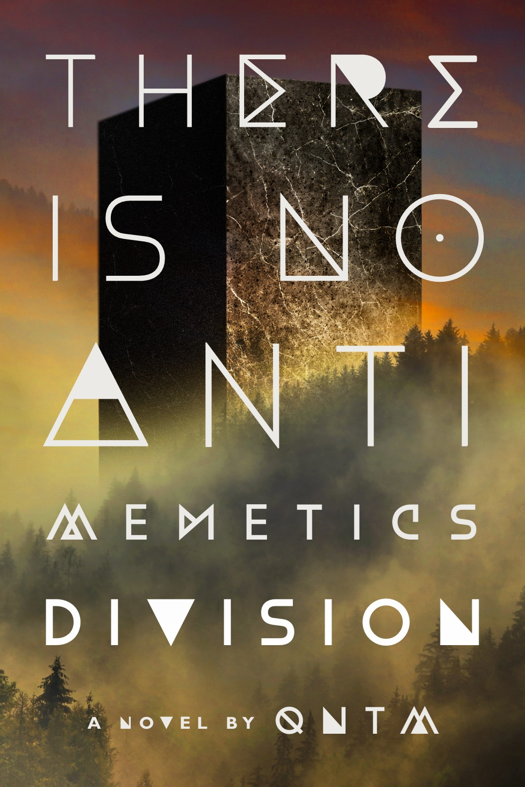
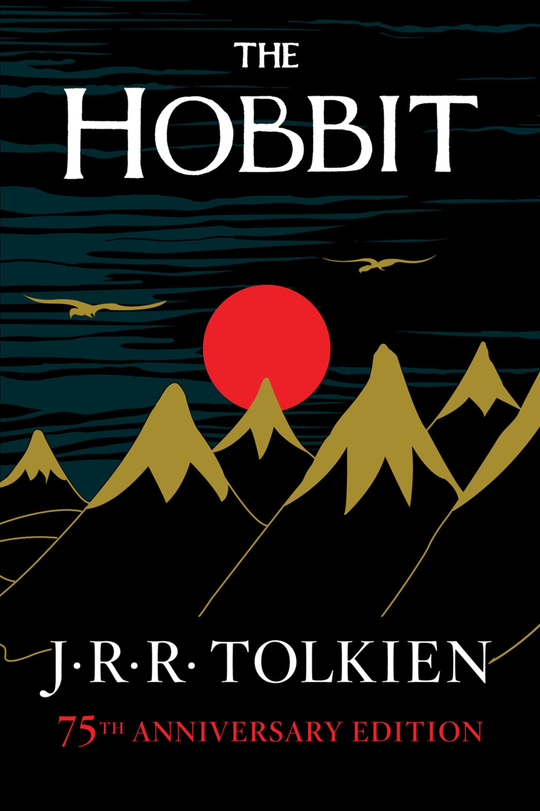
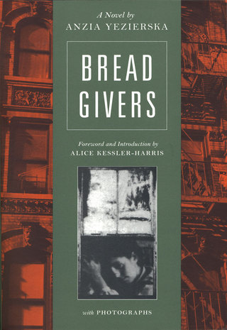

Favorite books
Favorite Video Games
Favorite Movies
How to download SCP: Containment Breach
Favorite TV shows
Favorite books
- Horror books
- There is no antimemetics devision

- House of Leaves
- Goosebumps: Horrorland
- Non horror fiction books
- Do androids dream of electric sheep?
- The Hobbit

- Bread Givers

Favorite Video Games
How to get SCP: Containment Breach
- Click this link.
- Scroll down until you see mirrors.
- Click one of the mirrors.
- The game should be downloading as a zip file
- Unzip the file
- Click the game, and enjoy!
Favorite Movies
- Moby Dick
- Backrooms
- Avengers: Infinity War
- Avengers: Endgame
- Spiderman: No way home
Favorite TV shows
- Stanger Things
- Maniacs
- Snowpeircer
- The Boys